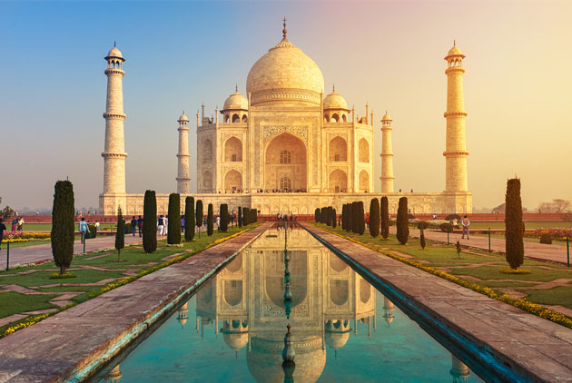

泰姬瑪哈陵
泰姬瑪哈陵是位於印度北方邦阿格拉的一座用白色大理石建造的陵墓，是印度知名度最高的古蹟之一。它是蒙兀兒王朝第5代皇帝沙迦罕為了紀念他的第二任妻子
——已故皇后姬蔓·芭奴而興建的陵墓，而且他本人身故後亦合葬於此。雖然白色大理石圓頂陵墓是泰姬瑪哈陵最讓人熟悉的部分，但整座泰姬瑪哈陵是一處
擁有多處建築的複雜建築群，包括大門、庭院和清真寺等，占地達17公頃。
泰姬瑪哈陵被廣泛認為是「印度穆斯林文化的建築」，其設計結合了印度建築和波斯建築的風格，被認為是蒙兀兒建築最精美的例子。
泰姬瑪哈陵大約在1632年開始建造，在1653年左右完工，使用了成千上萬的工匠，耗資甚巨。泰姬瑪哈陵的設計建造被委託給一個建築師團隊，由沙迦罕總監，
團隊中包括有阿卜杜爾·卡里姆米爾（Mir Abd-ul Karim），馬克拉馬特·汗（Makramat Khan）和烏斯塔德·艾哈邁德·拉合里等建築師。其中，波斯建築師
拉合里一般被認為是首席設計師。
1983年，聯合國教科文組織將泰姬瑪哈陵列為世界遺產，稱其為「印度穆斯林藝術的瑰寶奇葩」、「世界遺產中令世人讚嘆的經典傑作之一」。
起源與靈感
泰姬瑪哈陵的泰姬二字，是Taj的音譯，為皇冠之意，因此並不能稱呼葬於此的姬蔓·芭奴為泰姬。姬蔓·芭奴是沙迦罕父親賈漢吉爾的第20個妻子——
茉荷茹妮莎的姪女，1612年與當時還是庫拉穆王子的沙迦罕結婚，被賜予慕塔芝瑪哈（Mumtaz Mahal）的封號，意為「宮中翹楚」。姬蔓·芭奴入宮19年，苦
於多孕，生有8男6女。1630年，姬蔓·芭奴在分娩第14個孩子高哈拉貝古姆時，不幸感染產褥熱，死於南征的軍營中。據傳姬蔓·芭奴臨終前向沙迦罕提出了3個
遺願，其中一項就是為她建造一座全世界最美麗的陵墓。蒙兀兒宮廷記錄了沙迦罕喪妻後的悲痛，印證了作為泰姬瑪哈陵緣起的愛情故事。
建築
泰姬瑪哈陵建築群由主殿、大門、庭院、清真寺、答辯廳（jawab）等多個部分構成。建築群的設計繼承並發揚了波斯建築與早期蒙兀兒建築的設計傳統。其設
計從多座成功的帖木兒王朝和蒙兀兒王朝建築中汲取靈感、包括帖木兒陵、胡馬雍陵、國柱陵（又稱「小泰姬瑪哈陵」）以及沙迦罕建在德里的賈瑪清真寺。早
期蒙兀兒建築使用紅色的砂岩建築，而沙迦罕倡導使用嵌寶石的白色大理石，使蒙兀兒建築的精緻達到了新的高度。
泰姬瑪哈陵在建築美學上，最引人注意的是其完全對稱。以主殿中心向兩向延伸之軸線切割之中軸線，可以看到相對於中軸線之距離相等之處，必存在數量、
尺寸及樣式完全對稱之雕飾。其中軸線貫穿園區各門、水池及道路等之中線。